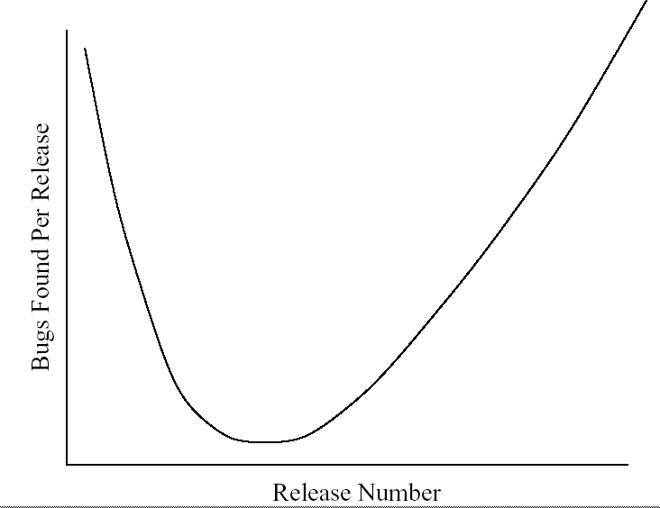
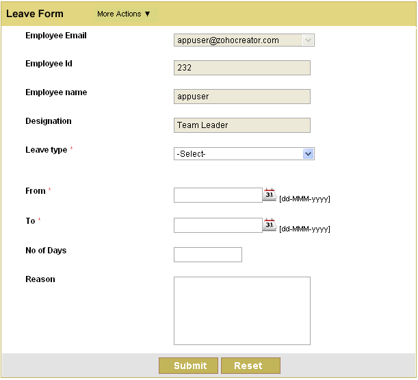

Desenvolvimento
Orientado a Testes com
Jasmine
EU

- Front-end Engineer CWI Software;
- Usuário Linux e Evangelizador Software Livre;
- Blogueiro;
- Colaborador Mozilla Brasil;
- Organizador do GU Mobile-RS.
Conteúdo
- TDD?
- Quando?
- Por que?
-
Jasmine
- Matchers
- Exemplo prático
"Javascript é uma linguagem feia, boba, tem tipagem fraca, tem OO pobre e é horrível de debugar. Mal pode ser considerada linguagem."
return false;
TDD?
Quando devo usar TDD?
Porque?
- Escrever código de qualidade;
- Diminuir a quantidade de bugs;
- Manutenção de código;
- Dormir melhor.
Observação de Belady-Lehman
Refatoração
Se você refatorar código sem ter cobertura de testes, só está mudando a ***** de lugar
Martin Fowler
Interfaces simples podem
ser complexas

Em 13 elementos 'clicáveis', com 3 cliques, em qualquer ordem, temos 1716 combinações
Debug
Jasmine
- BDD
- Livre
- Independe de browser *
- Sintaxe clara
- Capaz de testar código assíncrono
Nosso primeiro teste!

describe ('comportamento mais abrangante', function () {
});
describe ('Fizz Buzz', function () {
it('numero igual a tres deve retornar fizz', function () {
expect(game.init(3)).toEqual("fizz");
});
});
describe ('Fizz Buzz', function () {
beforeEach(function () {
//executa antes de cada spec
});
it('numero igual a tres deve retornar fizz', function () {
expect(game.init(3)).toEqual("fizz");
});
afterEach(function () {
//executa depois de cada spec
});
});
Dependências
- libs/jasmine.css
- libs/jasmine.js
- libs/jasmine-html.js
- libs/jasmine-load.js
Arquivos
- main.js
- test.js